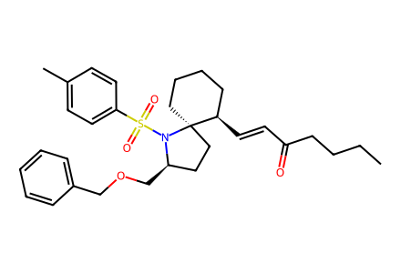
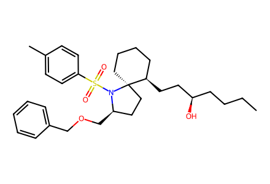
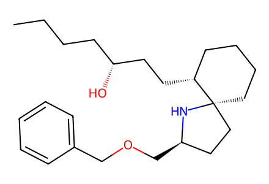
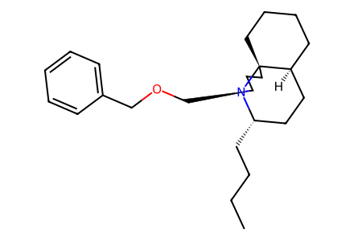
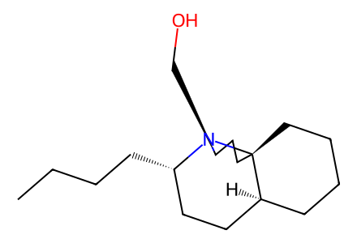
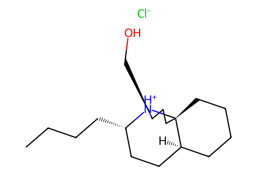
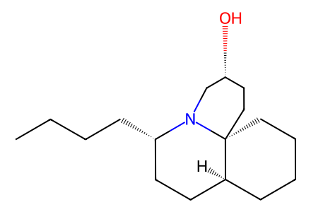
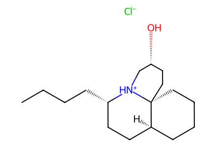

CCCCC(=O)/C=C/[C@@H]1CCCC[C@@]12CC[C@@H](COCc1ccccc1)N2S(=O)(=O)c1ccc(C)cc1SI-only extraction of all source-drawn prepared structures 5-9, revised polycitorols A/B and their salts. Route begins at drawn enone 5. SI p3 reports 3 + 4 -> 5 (94%) but contains no drawings or full names for 3/4; this edge is retained as unresolved rather than inventing starting-material SMILES. Full article and upstream preparation are unavailable. Facts compiled deterministically; independent review pending.
完整 JSON · 逐步 CSV · 路线序列 · SDF · HRMS 核对
| 事件 | 分子连接 | 报告产率 | Canonical reaction SMILES |
|---|---|---|---|
| E02 | 5 → 6 | 6: 90% | CCCCC(=O)/C=C/[C@@H]1CCCC[C@@]12CC[C@@H](COCc1ccccc1)N2S(=O)(=O)c1ccc(C)cc1>>CCCC[C@@H](O)/C=C/[C@@H]1CCCC[C@@]12CC[C@@H](COCc1ccccc1)N2S(=O)(=O)c1ccc(C)cc1 |
| E03 | 6 → 7 | 7: 96% | CCCC[C@@H](O)/C=C/[C@@H]1CCCC[C@@]12CC[C@@H](COCc1ccccc1)N2S(=O)(=O)c1ccc(C)cc1>>CCCC[C@@H](O)CC[C@@H]1CCCC[C@@]12CC[C@@H](COCc1ccccc1)N2S(=O)(=O)c1ccc(C)cc1 |
| E04 | 7 → 8 | 8: 81% | CCCC[C@@H](O)CC[C@@H]1CCCC[C@@]12CC[C@@H](COCc1ccccc1)N2S(=O)(=O)c1ccc(C)cc1>>CCCC[C@@H](O)CC[C@@H]1CCCC[C@@]12CC[C@@H](COCc1ccccc1)N2 |
| E05 | 8 → 9 | 9: 79% | CCCC[C@@H](O)CC[C@@H]1CCCC[C@@]12CC[C@@H](COCc1ccccc1)N2>>CCCC[C@H]1CC[C@@H]2CCCC[C@]23CC[C@@H](COCc2ccccc2)N13 |
| E06 | 9 → 1 | 1: 80% | CCCC[C@H]1CC[C@@H]2CCCC[C@]23CC[C@@H](COCc2ccccc2)N13>>CCCC[C@H]1CC[C@@H]2CCCC[C@]23CC[C@@H](CO)N13 |
| E07 | 1 → 1-HCl | 1-HCl: 78% | CCCC[C@H]1CC[C@@H]2CCCC[C@]23CC[C@@H](CO)N13>>CCCC[C@H]1CC[C@@H]2CCCC[C@]23CC[C@@H](CO)[NH+]13.[Cl-] |
| E08 | 1 → 2 | 2: 93% | CCCC[C@H]1CC[C@@H]2CCCC[C@]23CC[C@@H](CO)N13>>CCCC[C@H]1CC[C@@H]2CCCC[C@]23CC[C@@H](O)CN13 |
| E09 | 2 → 2-HCl | 2-HCl: 90% | CCCC[C@H]1CC[C@@H]2CCCC[C@]23CC[C@@H](O)CN13>>CCCC[C@H]1CC[C@@H]2CCCC[C@]23CC[C@@H](O)C[NH+]13.[Cl-] |

CCCCC(=O)/C=C/[C@@H]1CCCC[C@@]12CC[C@@H](COCc1ccccc1)N2S(=O)(=O)c1ccc(C)cc1CCCC[C@@H](O)/C=C/[C@@H]1CCCC[C@@]12CC[C@@H](COCc1ccccc1)N2S(=O)(=O)c1ccc(C)cc1
CCCC[C@@H](O)CC[C@@H]1CCCC[C@@]12CC[C@@H](COCc1ccccc1)N2S(=O)(=O)c1ccc(C)cc1
CCCC[C@@H](O)CC[C@@H]1CCCC[C@@]12CC[C@@H](COCc1ccccc1)N2
CCCC[C@H]1CC[C@@H]2CCCC[C@]23CC[C@@H](COCc2ccccc2)N13
CCCC[C@H]1CC[C@@H]2CCCC[C@]23CC[C@@H](CO)N13
CCCC[C@H]1CC[C@@H]2CCCC[C@]23CC[C@@H](CO)[NH+]13.[Cl-]
CCCC[C@H]1CC[C@@H]2CCCC[C@]23CC[C@@H](O)CN13
CCCC[C@H]1CC[C@@H]2CCCC[C@]23CC[C@@H](O)C[NH+]13.[Cl-]